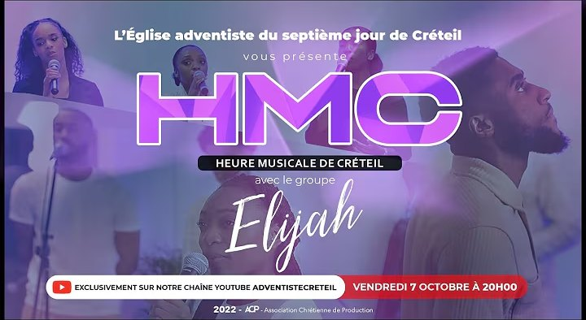
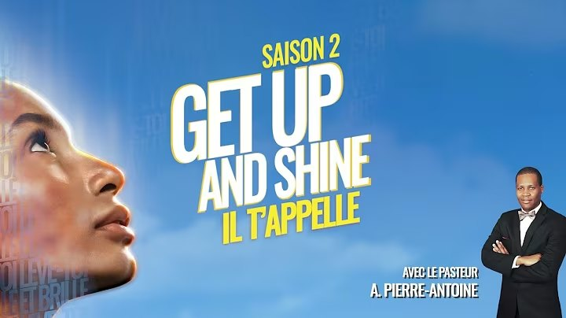

Nous portons vos événements à l’écran.
ACP, l’Association Chrétienne de Production, accompagne les églises et les associations avant, pendant et après leurs événements : communication, diffusion en direct, films, formation.
De la première affiche au replay.
Une équipe de bénévoles formés, avec son propre matériel, vous accompagne à chaque moment de votre événement, et tout au long de l’année.
Avant
Préparer et faire connaître votre événement
Nous établissons avec vous un plan de communication, puis nous créons l’affiche, la vidéo d’annonce et les visuels pour les réseaux sociaux : tout pour donner envie de venir.
Le jour J
Diffuser en direct (streaming)
Notre équipe arrive avec son propre matériel et s’occupe de tout, de l’installation à la diffusion sur Internet. Ainsi, ceux qui ne peuvent pas se déplacer suivent le culte ou la rencontre en direct, depuis chez eux.
Après
Faire revivre l’événement
Nous réalisons un film court qui restitue l’ambiance et les temps forts, l’enregistrement complet des prédications et interventions, et des extraits pour les réseaux sociaux.
Toute l’année
Former vos équipes
Nous formons vos bénévoles à l’image, à la diffusion en direct et à RégieLive, sur votre propre matériel.
Vous accompagner
Nous venons voir votre lieu, écoutons vos besoins et votre budget, puis vous aidons à choisir, installer et régler le matériel, avec un audit complet si besoin. Nous restons à vos côtés jusqu’à la première diffusion.
RégieLive
Nous l’avons créé pour conduire tout le culte depuis un seul poste : chants, versets, vidéos et présentations, sur les écrans de la salle comme dans le direct. Il écoute même la prédication pour proposer les versets cités. Découvrir RégieLive
En action.
Nous assurons l’ensemble de la chaîne de production. Quelques réalisations :

ConcertsSon · Image · DirectHMC — Heure Musicale de Créteil
Son, image et diffusion des concerts de louange.

ConférencesGet Up and Shine 2
Cultes, concerts et conférences en direct, et toutes nos réalisations.
Notre logiciel pour la régie du culte.
RégieLive conduit tout le culte depuis un seul poste : chants, versets, vidéos et présentations, sur les écrans de la salle, dans le direct et pour les chanteurs. Il écoute la prédication pour proposer les versets cités et se pilote même depuis un téléphone. En français, pensé pour les bénévoles : il est né de notre expérience du terrain.
Découvrir RégieLiveTravaillons ensemble.
Nous soutenir
ACP est une association. Vos dons financent le matériel, la formation des bénévoles et le développement de RégieLive.
Faire un don avec HelloAssoNous contacter
Un événement à préparer ou à diffuser, une formation, un conseil pour votre matériel, une question sur RégieLive ? Écrivez-nous, nous répondons rapidement.
acproduction.asso@gmail.com